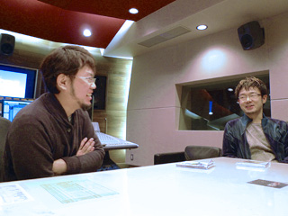
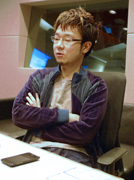
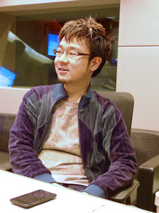
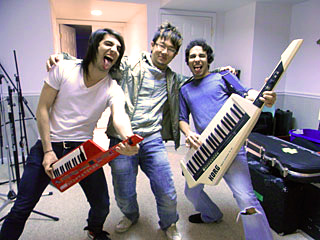

みなさんこんにちは！ ソニックチャンネル スタッフ★です。
本日2010年12月22日は『ソニック カラーズ』オリジナルサウンドトラック 「ヴィヴィッド・サウンド × ハイブリッド・カラーズ」の発売日です！
そこで今回のクリエイターズインタビュー第29回目は、『ソニック カラーズ』のサウンドディレクター床井 健一とコンポーザーでもあり、サウンドトラックCDのプロデュースを担当した大谷 智哉にお話を伺いましたので、その模様を皆さんにお伝えします！！

床井さん、大谷さん、本日はよろしくお願い致します。
床井・大谷：よろしくお願いします。
まずは「ヴィヴィッド・サウンド × ハイブリッド・カラーズ」発売おめでとうございます。今作ではお二人という事ですが、どういう役割で作業を進行されたのでしょうか？
床井： まずゲーム本編では、私がサウンドディレクターとして全体の監理を行い、オーケストラ曲や映像周りの劇伴の作・編曲を中心に、4つのアクションステージを担当しています。大谷はオープニング、エンディングテーマの作曲を中心に、3つのアクションステージを担当しています。また、今回のサウンドトラックCDは大谷がプロデューサーとして、曲の構成からパッケージに至る所までまとめ上げています。ご覧の通り、「ヴィヴィッド・サウンド × ハイブリッド・カラーズ」というタイトルも、今作のサウンドを知る上でとても重要なものになっています。
そのアルバムタイトルも非常に印象的ですよね。 “鮮やか”や“生き生き”という意味の「ヴィヴィッド」と、異なるモノが合わさる「ハイブリッド」と言う単語が組み合わさって、すごく能動的なイメージでソニックらしい感じを受けます。

大谷： はい、ただコンセプトがはっきりしていても、アルバムタイトルに相応しい良いフレーズを考えるのは本当に悩みますね……。今作はカラフルな色使いが特徴的な作品であるところから、"Vivid（ヴィヴィッド）" という単語を絡めたい、というところから考え始めました。特定のジャンルに限定しない様々な音楽性がミックスされた曲調や、ソニックとウィスプの能力（カラーパワー）がかけ合わさって生まれるゲーム性から、生楽器による演奏と、シンセイサイザーやエフェクティヴで人工的なサウンドを混ぜ合わせた"Hybrid（ハイブリッド）"な音色で構成されているため、"ヴィヴィッドなカラー"と"ハイブリッドなサウンド" という2つのフレーズを組み合わせてタイトルを考えました。
たしかに複合的な内容を連想させるようになっていますね。そして、その多様な楽曲群ですが非常に収録曲が多い！
大谷： そうなんです。メインストリームのソニックタイトルだと毎回これくらいボリュームになりますね。『ソニック ワールドアドベンチャー』の時よりもカットシーンの分量が少なくなった分、曲数が減るのかと思いきや、ACT毎のアレンジバージョンをたくさん作ったので、あまり変わらなかったです。Wii版の楽曲はACT毎のアレンジなど含め全曲収録しています。DS版のバージョンも独特の質感があって好きなんですが、基本的にはWii版の楽曲の移植であることと、ディスク容量の関係で収録していません。その代わりと言うわけではないのですが、DS版にはゲーム内にサウンド視聴モードが用意されています。それでも3枚組で全82曲になりました。たくさん作りましたね。ちなみに全収録時間は194分43秒になります。って言われてもピンと来ないですよね。僕も来ません（笑）。
（笑）
3枚組になったパッケージですが、ヴィヴィッドという単語に象徴させるように、パッケージデザインも躍動感があり非常に鮮烈ですね。更に3枚組み用の豪華な仕様になっていますから、手にしているだけでも飽きさせませんね。
大谷： はい、手に取った瞬間から嬉しくなるような、そんなCDにしたいと思いながら作っています。楽曲へのこだわりはもちろんですが、パッケージデザインは、その作品の内容を表す顔だと思っていますので、非常にこだわっているポイントなんです。今はインターネットの動画共有サイトやダウンロード販売などでも手軽に音楽を楽しむことが出来てしまう時代ですが、パッケージ商品であるからには音楽以外の部分も購入しているものの一部ですので、手に取った瞬間や開封した瞬間から嬉しい気持ちになってもらえるような商品を作りたいと思っています。今作は、蛍光色を使用したスリーブジャケットや、ホログラム紙を使用した変形型の帯など、今作の曲調に合わせたキラキラでインパクトのあるデザインになっていますので、ぜひ手に取って確認して欲しいです。今回はあえて、スリーブジャケットを外した写真を掲載はしませんので、そこは購入してからのお楽しみということにしておきます！20Pブックレットには、歌詞、日本語対訳、全曲のスタッフクレジットの他に、歌で参加してもらったCash Cash（キャッシュ・キャッシュ）の2人、飯塚プロデューサー、岸本ディレクター、床井と私のコメントも掲載してあり、音楽以外の部分でも楽しんでもらえるようテキスト量も多めとなっています。
そうですね、ぜひパッケージを開けて中も確認して貰いたいです。
大谷： 中にワラワラ詰まってますからね（笑）。それ以上のコメントは控えておきます。
さて、ソニックと言えば毎回そのタイトルを象徴するヴォーカルトラックが恒例となっています。今作のメインテーマ"Reach For The Stars"は、【不可能と思えるものを得ようとする】の英語の慣用句ですが、常に挑戦を続けるソニックにぴったりな楽曲です。また、ボーカルが特徴的なエンディングテーマ"Speak With Your Heart"も非常に聴き応えがあります。今作のヴォーカルトラックはどのように制作されたのでしょうか？

大谷： ありがとうございます。オープニングテーマの"Reach For The Stars"は、私が作曲し、Cash Cash（キャッシュ・キャッシュ）のリードヴォーカルJean Paul Makhloufに歌で参加してもらいました。最近は、発売前のトレイラー映像からテーマ曲が露出していくケースが多いので、今作ならではの特色を捉えつつ、新作へのワクワク感を高めてもらえるような曲を作りたいと思っていました。前作『ソニック ワールドアドベンチャー』のテーマ曲"Endless Possibility"の基本的なコンセプトは踏襲しつつも、よりポップでキャッチーな曲になっていると思います。
なるほど、確かにトレイラーで初めて"Reach For The Stars"を聴いたときに"Endless Possibility"を彷彿とさせるポップな印象を受けて、前作からの流れを感じました。"Reach For The Stars"の方が確かにキャッチ－な印象です。このキャッチ－さは曲調もそうですが、シンガーさんの役割が大きいのではないでしょうか？
大谷： はい、やはりヴォーカル曲において歌声は最も耳につく部分なので、新作のフレッシュなイメージを提供出来るように、毎回新しいシンガーを起用するようにしているんです。

写真は収録後の１コマですが、ご覧の通りごきげんな奴らです（笑） 。
一方のエンディングテーマ"Speak With Your Heart"は私と南波真理子さん（今作ではエリアマップの曲を担当）との共作曲になります。共作をする理由は、それぞれが個人で作る曲のカラーとも違うテイストを出したかったからです。リードヴォーカルには、同じくCash Cash（キャッシュ・キャッシュ）のキーボード担当のAlex Makhlouf がトーキング・モジュレーターという声の音色を変える装置を使って歌ってもらいました。エフェクティブな声の音色にすることを前提にシンガーを選定していたので、彼らに参加してもらってバッチリでしたね。歌詞はコミュニケーションをテーマにしたもので、言葉の通じない宇宙人と「心の声で話そう」という内容を歌っています。皆で手拍子しながら一緒に歌っているイメージですね。開発チームのスタッフも手拍子とサビのコーラスで参加しています。もちろん全員ではないですよ（笑）。まずは、どうにかゲームをクリアしてエンドロールで聴いてもらってから、サントラでも楽しんでもらいたいですね。こんな曲がエンドロールで流れるソニックってシャレてるなって思います（笑）。どちらもとってもお気に入りの曲です。レコーディング時のエピソードなどもブックレットのコメントに書いておきましたのでぜひチェックして欲しいですね。
たしかに、楽曲のエピソードを知っていると、聴くときの楽しみが増えますよね。
大谷： 色々な角度から楽しんでもらいたいですね。